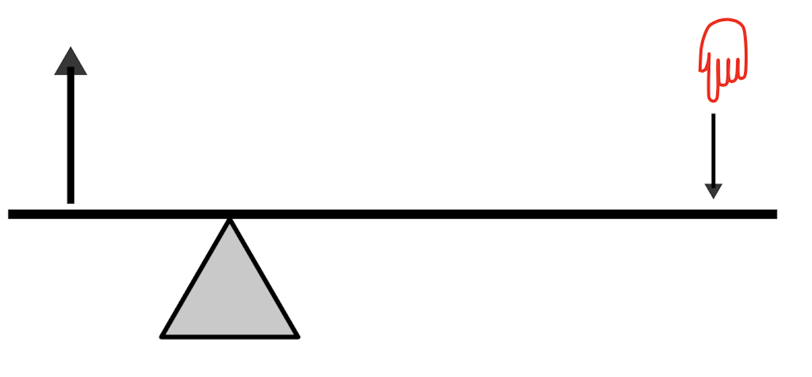

An Introduction to Mechanisms
1 Levers
Learn It
- Archimedes is quoted as having said;
Give me a place to stand, and I shall move the Earth with it
.jpg)
- A lever is characterised by a
beam, which is hinged by afulcrum.

Research It
- There are three classes of lever (Class 1, Class 2 and Class 3)
- Use online resources to find out about the three classes of lever and then complete the Silver Badge task.
Badge It - Silver
- Click in the following link to complete the quiz on the different types of levers.
Design It
- You're going to use the Wacano to design and build some levers.
- Use the image below as a guide, and build a First-class lever.

Badge It - Gold
- Using the connectors as beams, your finger as the effort and an elastic band as the resistance, build all three classes of lever, take a photo of your second class level and upload to www.bournetolearn.com.
Learn It
- Levers can amplify an input force to provide a larger output force.

- If you look at the diagram above, the lever is said to be balanced.
- This is because the product of the mass on the left multiplied by it's distance from the fulcrum, is equal to the product of the mass on the right, multiplied by it's distance to the fulcrum.
- The equation (written above the image) allows us to easily calculate output forces for any class of lever. We can change the sybols a little to make it easier to use.
- Look at this example calculation

Badge It - Platinum
- Click on the link to fill in the quiz on the calculations shown below.